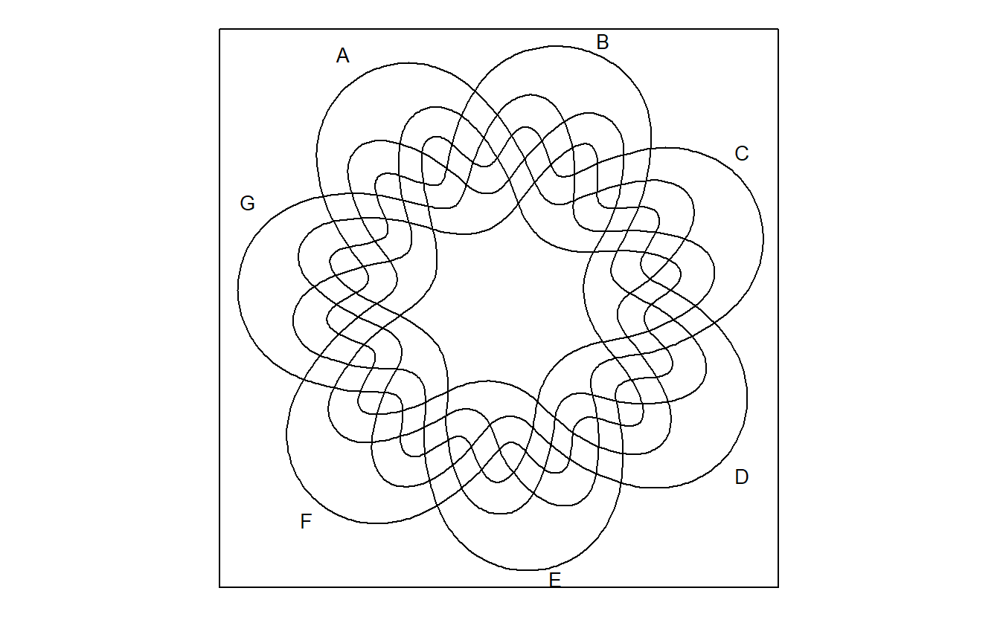
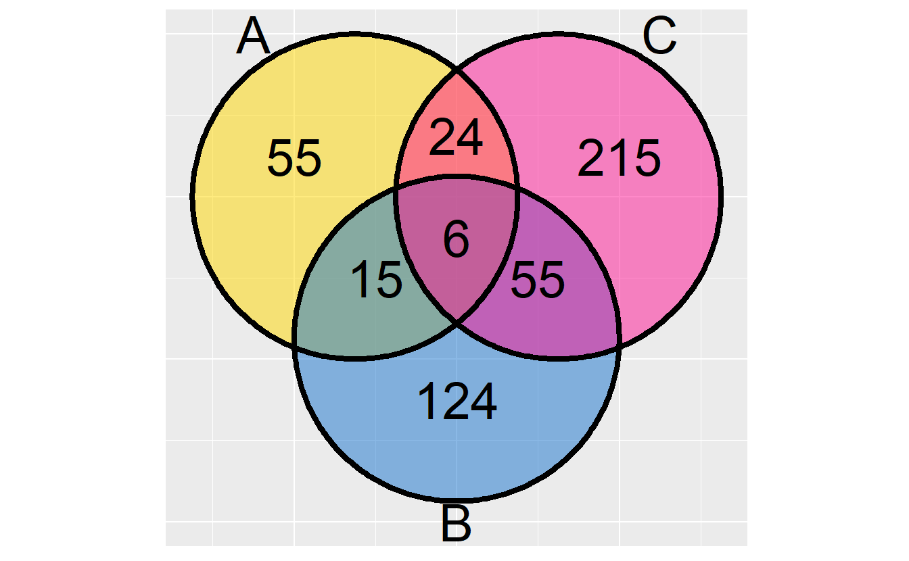
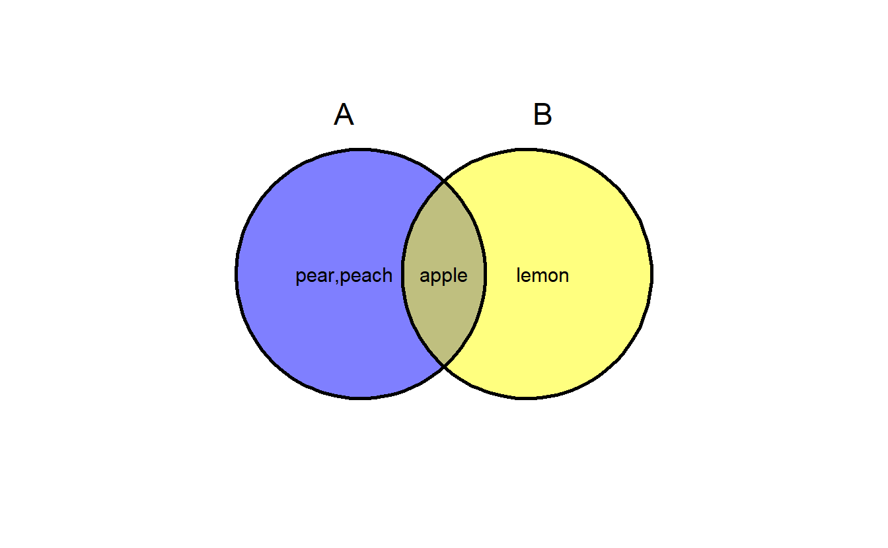

Chapter 2 Introduction
Suppose we have a list of genes.
genes <- paste0("gene",1:1000)
set.seed(20210302)
gene_list <- list(A = sample(genes,100),
B = sample(genes,200),
C = sample(genes,300),
D = sample(genes,200))
library(dplyr)## Warning: package 'dplyr' was built under R version 4.0.52.1 VennDiagram
VennDiagram (Chen 2018) is currently the most popular Venn plot tool in R environment.
library(VennDiagram)
VennDiagram <- venn.diagram(x = gene_list, filename = NULL)
cowplot::plot_grid(VennDiagram)
It provide basic functions to draw Euler plot.
venn.plot <- draw.triple.venn(
area1 = 65,
area2 = 75,
area3 = 85,
n12 = 35,
n23 = 15,
n13 = 25,
n123 = 5,
category = c("First", "Second", "Third"),
fill = c("blue", "red", "green"),
lty = "blank",
cex = 2,
cat.cex = 2,
cat.col = c("blue", "red", "green"),
euler.d = TRUE
)
cowplot::plot_grid(venn.plot)helper function to get Venn partitions.
get.venn.partitions(gene_list) %>% dplyr::as_tibble()## # A tibble: 15 x 7
## A B C D ..set.. ..values.. ..count..
## <lgl> <lgl> <lgl> <lgl> <chr> <named list> <int>
## 1 TRUE TRUE TRUE TRUE A∩B∩C∩D <chr [1]> 1
## 2 FALSE TRUE TRUE TRUE (B∩C∩D)<U+2216>(A) <chr [7]> 7
## 3 TRUE FALSE TRUE TRUE (A∩C∩D)<U+2216>(B) <chr [2]> 2
## 4 FALSE FALSE TRUE TRUE (C∩D)<U+2216>(A∪B) <chr [41]> 41
## 5 TRUE TRUE FALSE TRUE (A∩B∩D)<U+2216>(C) <chr [5]> 5
## 6 FALSE TRUE FALSE TRUE (B∩D)<U+2216>(A∪C) <chr [25]> 25
## 7 TRUE FALSE FALSE TRUE (A∩D)<U+2216>(B∪C) <chr [12]> 12
## 8 FALSE FALSE FALSE TRUE (D)<U+2216>(A∪B∪C) <chr [107]> 107
## 9 TRUE TRUE TRUE FALSE (A∩B∩C)<U+2216>(D) <chr [5]> 5
## 10 FALSE TRUE TRUE FALSE (B∩C)<U+2216>(A∪D) <chr [48]> 48
## 11 TRUE FALSE TRUE FALSE (A∩C)<U+2216>(B∪D) <chr [22]> 22
## 12 FALSE FALSE TRUE FALSE (C)<U+2216>(A∪B∪D) <chr [174]> 174
## 13 TRUE TRUE FALSE FALSE (A∩B)<U+2216>(C∪D) <chr [10]> 10
## 14 FALSE TRUE FALSE FALSE (B)<U+2216>(A∪C∪D) <chr [99]> 99
## 15 TRUE FALSE FALSE FALSE (A)<U+2216>(B∪C∪D) <chr [43]> 432.2 colorfulVennPlot
This package can specify the filled color for each region, but the first required parameter is a numeric vector of length 15, with specific names in suitable order, which makes it is very complicated to setup and use.
Besides, the filled color need to be specified one by one, which is very complicated as well.
library(colorfulVennPlot)
Colors <- c('red', 'yellow', 'green', 'pink', 'darkgreen','blue','lightblue','tan',
'yellowgreen','orange','purple','white','grey','plum','brown')
regions <- seq(15)
names(regions) <- c('1000', '0100', '1100', '0010', '1010', '0110', '1110', '0001',
'1001', '0101', '1101', '0011', '1011', '0111', '1111')
plotVenn4d(regions, Colors=Colors)2.3 venn
Using venn is very simple.
library(venn)
venn(gene_list)venn also support different shapes.
venn(x = gene_list, ellipse = TRUE)venn support ggplot, but it depends on ggpolypath, which is not popular.
venn::venn(gene_list, ellipse = TRUE, ggplot = TRUE)venn plots Venn diagram up to 7 sets.
venn::venn(5)venn::venn(6)venn::venn(7)
venn accepts multiple format of input.
intersections <- c('~A~B~C~D', '~A~B~CD', '~A~BC~D', '~A~BCD', '~AB~C~D', '~AB~CD', '~ABC~D', '~ABCD', 'A~B~C~D', 'A~B~CD', 'A~BC~D', 'A~BCD', 'AB~C~D', 'AB~CD', 'ABC~D', 'ABCD')
venn(intersections, zcol = colors()[sample(1:657, 16)])venn("A*D, A*B*~C + B*C*~D", zcol = c("blue", "red"))venn("AD, AB~C + BC~D", zcol = c("blue", "red"))
venn("1-----")
venn("100 + 110 + 101 + 111")2.4 nVennR
nVennR provides an interface for the nVenn algorithm (Pérez-Silva, Araujo-Voces, and Quesada 2018). This algorithm works for any number of sets, and usually yields pleasing and informative Venn diagrams with proportionality information.
library(nVennR)
myNV <- plotVenn(gene_list)cat(myNV$svg)2.5 eulerr
eulerr generates area-proportional euler diagrams that display set relationships (intersections, unions, and disjoints) with circles or ellipses.
Unlike Venn diagrams, which show all possible relations between different sets, the Euler diagram shows only relevant relationships.
Venn diagrams are a more restrictive form of Euler diagrams. A Venn diagram must contain all \(2^n\) logically possible zones of overlap between its \(n\) curves, representing all combinations of inclusion/exclusion of its constituent sets.
library(eulerr)
venn_plot <- venn(gene_list)
plot(venn_plot)euler_plot <- euler(gene_list)
plot(euler_plot)At the time of March 9th, 2021, it is possible to provide input to eulerr as either
a named numeric vector with set combinations as disjoint set combinations or unions (depending on how the argument type is set in euler()), a matrix or data frame of logicals with columns representing sets and rows the set relationships for each observation, a list of sample spaces, or a table.
# Input as a matrix of logicals
set.seed(1)
mat <- cbind(
A = sample(c(TRUE, TRUE, FALSE), 50, TRUE),
B = sample(c(TRUE, FALSE), 50, TRUE),
C = sample(c(TRUE, FALSE, FALSE, FALSE), 50, TRUE)
)
(fit2 <- euler(mat))## original fitted residuals regionError
## A 13 13 0 0.008
## B 4 4 0 0.002
## C 0 0 0 0.000
## A&B 17 17 0 0.010
## A&C 5 5 0 0.003
## B&C 1 0 1 0.024
## A&B&C 2 2 0 0.001
##
## diagError: 0.024
## stress: 0.002The diagnose function is good.
error_plot(fit2)2.6 venneuler
venneulerr depends on JAVA runtime environment, which makes its installation is unbearable for non-JAVA users.
Besides, it only has one exported function, which doesn’t support list input.
library(venneuler)
combinations <- c(A=0.3, B=0.3, C=1.1, "A&B"=0.1, "A&C"=0.2, "B&C"=0.1 ,"A&B&C"=0.1)
vd <- venneuler(combinations)
plot(vd)
2.7 RVenn
RVenn is a package for dealing with multiple sets, while the base R functions (intersect, union and setdiff) only work with two sets.
The functions overlap, unite and discern abstract away the details, so one can just construct the universe and choose the sets to operate by index or set name.
RVenn provide a ggvenn() function to draw 2-3 sets Venn diagram. In this case,
its advantages are mostly rely on set operation functions.
library(RVenn)
ggvenn(Venn(gene_list[1:3]))
2.8 gplots
gplots provides various R programming tools for plotting data. It supports Venn plot up to five sets.
library(gplots)
venn(gene_list)
2.10 ggvenn
(Yan 2021)
library(ggvenn)## Warning: package 'ggplot2' was built under R version 4.0.5ggvenn(gene_list)
ggvenn can show elements in polygon regions.
a <- list(A = c("apple", "pear", "peach"),
B = c("apple", "lemon"))
ggvenn(a, show_elements = TRUE)
ggvenn(a, show_elements = TRUE, label_sep = "\n") # show elements in line